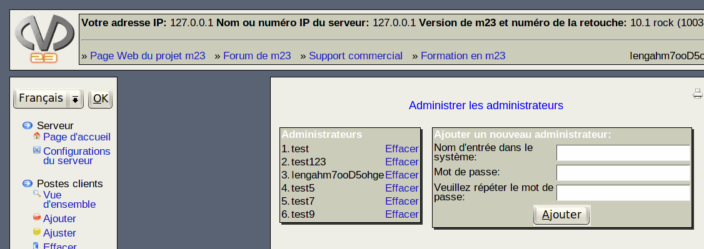

Dans ce dialogue, vous pouvez ajouter et effacer des comptes administrateurs. Les comptes administrateurs sont utilisés par des personnes devant avoir accès aux interfaces d'administration du serveur m23 actuel.

- Ajoutez des comptes administrateurs en entrant le nom de connexion (login) à utiliser et le mot de passe, puis cliquez sur Effacer
- Vous pouvez effacer un compte administrateur en cliquant sur le lien derrière le nom de connexion dans le système. S'il reste un seul compte administrateur, ce dernier ne peut pas être effacé.
root
2017-06-22